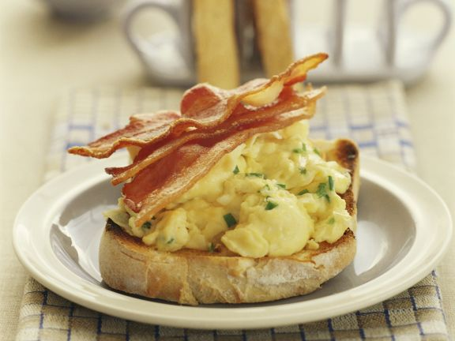

Bacon, Eggs and Toast
Start your morning off the right way with a quick and easy breakfast.
Ingredients
- Three large eggs
- Four rashes of bacon
- Two slices of bread
- 2 tbsp unsalted butter
- Salt
- Pepper
- Chives
Steps
- Arrange bacon on a parchment-lined baking sheet and place in a preheated 200 degrees oven for ten minutes
- Crack the eggs and half of the butter into a saucepan and stir constantly over a stovetop set to medium high.
- If you for any reason need to stop stirring remove saucepan from heat. This is to keep the egg curd as small as possible
- When eggs approach desired consistency, remove from the heat and season. Continue to cook to desired consistency and then add remainig butter
- Smear eggs over toasted bread and garnish with the bacon